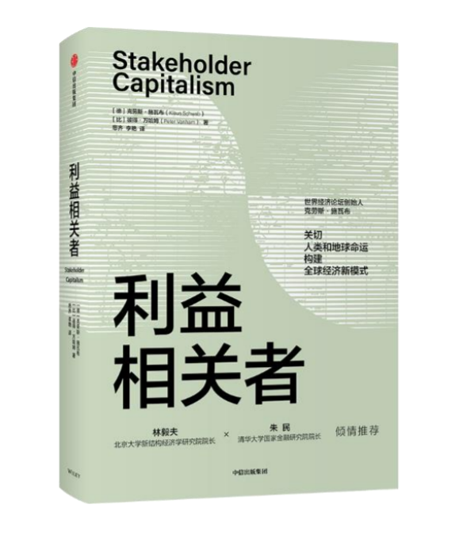

收录于合集 #政观书讯 16个
世界经济论坛创始人克劳斯·施瓦布又一力作
关切人类和地球命运
构建全球经济新模式

利益相关者
上市时间：2021年6月
定价：79.00元
作者：[德]克劳斯·施瓦布 [比]彼得·万哈姆
ISBN：9787521730272
编辑推荐
1. 《第四次工业革命》作者、世界经济论坛创始人克劳斯·施瓦布又一力作，关切人类和地球命运，构建全球经济新模式，助推企业、国家以及整个人类社会走上更加可持续的发展道路。
2. 作者集30多年观察、研究成果，系统分析当前全球经济发展困境和体制缺陷，创造性地提出了一种更加平等、更具包容性、更可持续的经济发展模式——利益相关者模式。
3. 聚焦当下全球经济发展的不平等、不平衡、不可持续问题，在新冠疫情对全球经济造成重创的当下更具现实意义，契合2021年世界经济论坛议程。
4. 探访和梳理了中国、丹麦、埃塞俄比亚、德国、印度尼西亚、新西兰、新加坡等地的企业发展和政策实践，为利益相关者模式在企业、国家、公民社会、国际社会层面的落地提供了实用性指导。
5. 世界银行前首席经济学家林毅夫、国际货币基金组织前总裁朱民、联合国和平使者珍·古道尔、微软现任CEO萨提亚·纳德拉等倾情推荐。
作者介绍
克劳斯·施瓦布（Klaus Schwab）
1938年出生于德国拉芬斯堡，世界经济论坛创始人兼执行主席。在1971年出版的《机械工程行业的现代企业管理》一书中首次提出“利益相关者”理念，并于同年成立了世界经济论坛。
施瓦布教授拥有弗里堡大学经济学博士学位、苏黎世联邦理工学院工程学博士学位和哈佛大学肯尼迪政府学院公共管理硕士学位。除担任论坛领导职务外，他于1972年出任日内瓦大学教授。施瓦布先生曾荣获17项荣誉博士。他所著的《第四次工业革命》（2016年）被译为30种语言，引起了广泛关注。
彼得·万哈姆(Peter Vanham)
世界经济论坛主席办公室传媒负责人，经济学者、商业作家，擅长撰写有关全球经济发展状况以及重要商业人物的作品，曾著有《成为CEO之前》；拥有哥伦比亚大学硕士学位、鲁汶大学商业工程硕士学位。
内容介绍
新冠肺炎疫情的全球大流行，将当前全球经济发展模式的脆弱性暴露无遗。但早在疫情到来之前，全球经济发展就已深陷多重困境：不平等加剧、经济增长放缓、生产力增长乏力、债务水平不可持续、气候变化加速、社会分裂深化……
世界经济论坛创始人施瓦布早在30多年前就已敏锐地观察到这些问题的显现，并且多年来一直致力于探究其根源。在他看来，当前由自利目标和短期利益驱动的经济发展体制决定了全球经济的发展必然是不平衡、不可持续且危机四伏的。因为在这一体制之下，政府“唯GDP论”，对全球化的弊端管理不善；技术掌握在少数人或少数大企业手中，抑制了创新和生产力的提升，加剧了不平等；“股东利益至上”的思维模式大行其道，导致自然资源被无节制开发，环境急剧恶化。
鉴于此，作者结合自己多年来的思考以及在商界、政界的实践经验，创造性地提出了一种更加平等、更具包容性、更可持续的经济发展模式——利益相关者模式，倡导企业、政府、公民社会和国际社会应该首先将全人类和整个地球的福祉放在中心地位。为此，作者还探访和梳理了中国、丹麦、埃塞俄比亚、德国、印度尼西亚、新西兰、新加坡等地的企业发展和政策实践，为利益相关者模式在具体实践层面的落地提供了实用性指导。
专家推荐
世界经济论坛是位于资本主义世界顶峰的一个公民社会组织，在这百年未有之大变局中，其创始人克劳斯·施瓦布教授，站在这个峰顶上，以自身从二战以后德国的废墟中成长起来的经历，以及1971年创办世界经济论坛以来和世界政治、经济、学界顶尖人物交往互动的阅历和反思之所得，在这本书中提出了一个把其他人和未来的关切包括在自己的追求之内的利益相关者行为模式，以摆脱当前资本主义社会中多数国家的政府和企业在做决策时只考虑自己当前利益所带来的世界性困境，实现类似于中国儒家哲学所追求的”己立立人、己达达人”的大同世界新国际格局。我佩服施瓦布教授的睿智，也和施瓦布教授一样乐观地认为这种新的利益相关者的世界一定会到来。
林毅夫
北京大学新结构经济学研究院院长、国家发展研究院名誉院长，世界银行前首席经济学家
施瓦布的新书针对世界面临的一系列结构性深层次挑战，如收入分配不平等恶化、气候变化和市场过度集中等，提出了以利益相关者共同合作的系统性解决方案。既有精细的微观剖析，有宏观的大局把握，值得细读。
朱 民
清华大学国家金融研究院院长、国际货币基金组织前副总裁
《利益相关者》一书可读性强且内容引人入胜，它恰当地解释了为什么气候变化和生物多样性崩溃的双重诅咒在今天如此普遍，是什么阻碍着我们实现一个更加可持续、更加公平的全球经济。克劳斯·施瓦布关注价值层面，认识到只有我们的头脑（智力、理性）和心灵（爱、尊重、理解）和谐运作，才能更好地实现子孙后代和我们的家园——地球的福祉。
珍·古道尔
珍·古道尔研究会创始人、联合国和平使者、生物学家
数十年来，克劳斯·施瓦布一直鼓励他的读者着眼于未来，因为当我们把目光放得更长远时，我们的头脑就可以针对眼前的障碍和机遇更好地做出规划。在《利益相关者》一书中，施瓦布教授引导我们将视野拓宽，关注公共部门和私营部门的众多相关群体。因为这些群体通过建立起伙伴关系、达成合作，能够打造更加光明、更加包容、更加可持续的未来。
萨提亚·纳德拉
微软CEO
本书目录
前言
01 我所成长的世界
第一章全球经济增长与发展的75年
战后全球经济秩序的基石
西方世界的辉煌三十年
跌宕起伏的20世纪70年代和80年代
转折时刻
20世纪90年代和21世纪最初10年
体制的崩溃
第一章 库兹涅茨的诅咒：当今世界经济的问题
第一个库兹涅茨诅咒：“唯GDP论”
第二个库兹涅茨诅咒：不平等
第三个库兹涅茨诅咒：环境
第二章 亚洲的崛起
中国的经济特区
前进的代价
紧随中国而起的新兴市场
印度的增长
放眼全局
第三章 分裂的社会
德国的分裂与统一
中间派政治势力的削弱
社会动荡
从分裂的社会中吸取教训
02 进步和问题的驱动因素
第四章 全球化
早期萌芽与“香料之路”
第一波全球化浪潮（19世纪至1914年）
第二波和第三波全球化浪潮
全球化4.0
今天的全球化
第五章 技术
不断变化的劳动力市场
不断变化的商业环境
工业革命以前
第一次工业革命
第二次工业革命
第三次工业革命
第四次工业革命
第六章 人与地球
03 利益相关者模式
第七章 利益相关者概念
利益相关者概念的发展历史
当代的利益相关者模式
利益相关者模式的原则和信念
利益相关者模式的实践
第八章 利益相关者模式在企业层面
第九章 利益相关者模式在国家、公民社会和国际社会层面
新冠肺炎疫情期间的新西兰
国家政府的关键任务
新加坡作为利益相关者政府的典范
新西兰与“唯GDP论”的破除
公民社会和国际社会
结语 通往利益相关者模式之路
致谢
注释
精彩书摘
前言
2020 年 2 月初的一天，我在日内瓦，正与一位同事相对而坐，讨论这本书。这时，我办公室的电话响了。事实证明，正是这一时刻堪称开启了人类历史的一个新纪元——新冠纪元前（AC）与新冠纪元后（BC），人类的关注点就此从新冠肺炎疫情暴发之前的时代转向新冠肺炎疫情暴发后的现实。
在接到那通电话之前，我和同事一直在致力于研究世界经济发展所面临的长期挑战，比如气候变化、不平等问题。自二战结束至今已有75 年时间，自世界经济论坛成立至今已有50 年时间， 我对于在此期间所建立的全球经济体系进行了深入思考，探究当前我们这个全球化世界的优势、弊端以及需要进行的权衡等，思索在未来 50 年或 75 年里我们需要对该体系做出何种改变才能确保它对后代而言更公平、更可持续、更具韧性。
但就因这通电话，这一长期议程被彻底颠覆了。我开始将研究焦点转移，转向我们所有人——生活在这个地球上的每个国家的每个人所即将面临的直接危机。
位于电话那端的是世界经济论坛北京代表处的负责人。通常情况下，这类通话所探讨的都是一些常规事务，让我有机会了解那些既定倡议和计划的进展情况。但这次不同往常。这位负责人打电话给我，是为了向我汇报那个冬季对中国造成猛烈冲击的一场大流行病——新冠肺炎疫情的情况。这种会引发严重呼吸道疾病的新型冠状病毒，最初仅出现在武汉市内，但后来迅速蔓延， 发展成为一场全国性的公共卫生事件。据我们在北京的同事解释，因为当时正值中国的春节期间，北京大部分人口都回到位于全国各地的家乡庆祝春节。春节过后，各地人员返京加剧了病毒的蔓延，北京最终采取了封禁措施。
我的同事冷静地向我说明了一些客观情况，解释了封禁措施对于我们的员工以及机构的运营来说究竟意味着什么。尽管如此，从他的声音中，我还是能感觉到他非常担心。他的家人，甚至是出现在他生活中的每一个人都受到了影响——他们都面临着被感染的危险，受到封禁措施的限制。当局采取了强力的防控措施。员工被迫无限期在家办公，想要走出家门都有严格的条件限制。一旦有人出现疑似感染症状，就要立即接受病毒检测，同时会被隔离起来。然而，即便是采取了如此强力的防控措施，也无法保证这一威胁人类健康的病毒能够得到控制。疫情蔓延得如此之快，人们即使待在家里，也不免担心会感染病毒。与此同时，从医院传出的消息是，这种疾病来势汹汹，难以治愈，给医疗卫生系统造成了极大的压力。
在瑞士，早在 2020 年 1 月下旬世界经济论坛年会举办时， 我们就已经对导致这场新冠肺炎疫情的新型冠状病毒有所耳闻。在年会上，当来自亚洲的参会者以及那些主要业务活动在亚洲的参会者探讨公共卫生领域的问题时，该疫情便成为一个话题点。但我一直寄希望于这场疫情持续的时间不会太久，扩散的范围不会太广，就像当年的 SARS（严重急性呼吸综合征，也被称为“非典”）疫情和 MERS（中东呼吸综合征）疫情一样得到控制，寄希望于它不会对我的同事、朋友和家人的生活造成影响，直到我接到那通电话。
这通电话改变了我对全球公共卫生威胁的理解。在随后的几天和几周里，我停止了这本书的创作工作，整个世界经济论坛都进入了危机模式。我们成立了一个特别工作组，要求所有员工在家办公，并且集中全部力量协助应对此次国际紧急事件。所幸我们的行动还不算太晚。一周后，疫情就蔓延至欧洲，迫使欧洲大部分地区实施封禁；几周后，包括美国在内的世界上大部分地区都陷入类似的境地。在接下来的几个月里，数百万人失去了生命或重病住院，上亿人失去了工作或收入，还有无数企业和政府或已经破产，或名存实亡。
我于 2020 年秋写下这篇序言。此时，第一波新冠肺炎疫情导致的全球紧急状态已经基本消退，但新一波感染浪潮使世界再次进入高度警戒状态。世界各国正谨慎地恢复社会生活和经济活动，但经济复苏非常不均衡。中国是首批结束封禁、恢复商业运营的主要国家之一，甚至有望在 2020 年全年实现经济增长。与之相比，在世界经济论坛其他的办公室所在地——日内瓦、纽约、旧金山和东京，公共生活虽已部分恢复，但形势还非常不稳定。在世界各地，许多人失去了生命和生计；数十亿美元被消耗，以维持人们的生活以及企业和政府的运转；原有的社会分歧有所加剧，同时又有新的分歧显现。
截至目前，随着最初的危机逐渐退去，包括我自己在内的许多人都开始意识到，这场大流行病及其带来的影响与我们已经识别出的现有全球经济体制存在的问题有着深刻的联系。这一想法将我带回 2020 年 2 月接到那通从北京打来的电话之前，我正在与人探讨的问题。我们之前所做的许多分析，比以往任何时候都更加符合现实。在这本书中，你将看到这些分析。我将在本书中呈现自己对于以下问题的观察：不平等的加剧、经济增长的放缓、生产力增长的乏力、债务水平的不可持续、气候变化的加速、社会问题的深化，以及在应对世界上最具紧迫性的挑战时全球合作的缺乏。我希望你们同样能够认识到，在新冠肺炎疫情暴发之后，这些观察的有效性丝毫未减。
不过，在“新冠纪元前”与“新冠纪元后”之间的过渡时期，有一件事情发生了改变。我注意到，民众、商业领袖和政府都更好地认识到，要打造一个更美好的世界是需要共同努力的。有一个观点得到了广泛认可，那就是我们需要以不同的方式构建后疫情时代。相比气候变化或日益加剧的不平等所带来的渐进式影响，新冠肺炎疫情以一种突如其来且横扫一切之势，让我们清楚地意识到，由自利目标和短期利益驱动的经济体制是不可持续的。这种经济体制是不平衡的、脆弱的，会增加社会、环境和公共卫生危机爆发的可能性。正如新冠肺炎疫情所表明的，一旦危机来袭，公共体系就将被置于难以承受的重压之下。
在这本书中，我将论证，我们当前这个由追求短期利益最大化、逃避税收和监管、环境危害的外部化等自利动机驱动的经济体制已经无法持续。我们需要的是一个旨在关切全人类和整个地球的社会、经济体和国际社会。具体而言，我们应该从过去 50 年西方世界盛行的“股东资本主义”体制和在亚洲占据主导地位、强调国家利益至上的经济发展体制，转向“利益相关者”体制。这正是本书的核心内容。紧接着，我展示了如何构建这样一种经济发展体制，以及为什么我们现在就需要这样做。
本书第一部分（第一章至第四章）概括性地梳理了 1945 年以来西方世界和亚洲的经济发展史，探讨了我们当前的经济体制取得的主要成就以及存在的主要缺陷，比如实现了经济的较快发展，但也造成了不平等加剧，环境恶化，给后代留下了巨额债务。该部分还探究了政治极化日益严重等社会趋势与我们当前的经济体制和治理体系之间存在着何种关联。第二部分（第五章至第七章）深入挖掘了我们当前经济体制存在的问题和取得的成就背后可能的驱动因素，审视了技术创新、全球化和贸易扮演的角色，以及对自然资源的使用问题。第三部分（第八章至第十章） 探讨了我们的全球经济体制可能发生的转变，给出了“利益相关者模式”的定义，并展示了在具体实践层面该模式对于企业、政府、国际组织和公民社会而言可能意味着什么。
在整本书中，无论是呈现我们正面临的全球性问题并且探讨这些问题可能的原因及结果时，还是提出我认为有助于打造未来更美好世界的解决方案时，我都尽力做到公正、客观。但我必须要补充的一点是，我在这本书中所展示的都仅仅是个人观点，这些观点不可避免地会受到我的个人生活经历影响。我在本书第一章中谈到自己在儿童时期、学生时期以及初入职场时的一些成长经历。我希望这些描述能够帮助读者了解我的世界观。我坚信， 无论是对于一个社会还是对于一个经济体来说，最优的成果都来源于合作——公共部门与私人部门的合作，或是各个国家之间以及各国人民之间的合作。
无论你是谁，我都希望这本书能够对你有所启发，促使你积极投身这一体制的构建。通过合力打造一个以包容性、可持续性和平等为基础的经济体制，我们可以转变新冠肺炎疫情的后续影响。尽管这场疫情已经不可避免地导致了人口死亡，对人们的生命与生计都造成了沉重的打击，但也许它能够帮助我们通往一个更具韧性的世界。我希望，后疫情时代之于我们的后辈，正如同二战后的那段时期之于我父母那一代人——那是一个团结的时代，人人都以刚经历的那段历史为戒，牢牢抓住当下和未来的时机，构建一个所有人都能共享繁荣的世界。
在战后的几十年里，为实现这一目标，在国内层面，我们致力于重建社会契约——比如，欧洲致力于建立社会市场经济，美国致力于打造“伟大社会”。在国际层面，我们创建了一个多边体制，旨在维护和平，促进合作，还构建一个包括世界银行、国际货币基金组织和联合国等机构在内的国际金融体系。
现在，我希望我们能够借后疫情时代的复苏之势，在国家层面实施利益相关者模式，同时在国际层面建立一个更加可持续的全球经济体制。
感谢你抽出时间阅读本书！
编辑：张天一